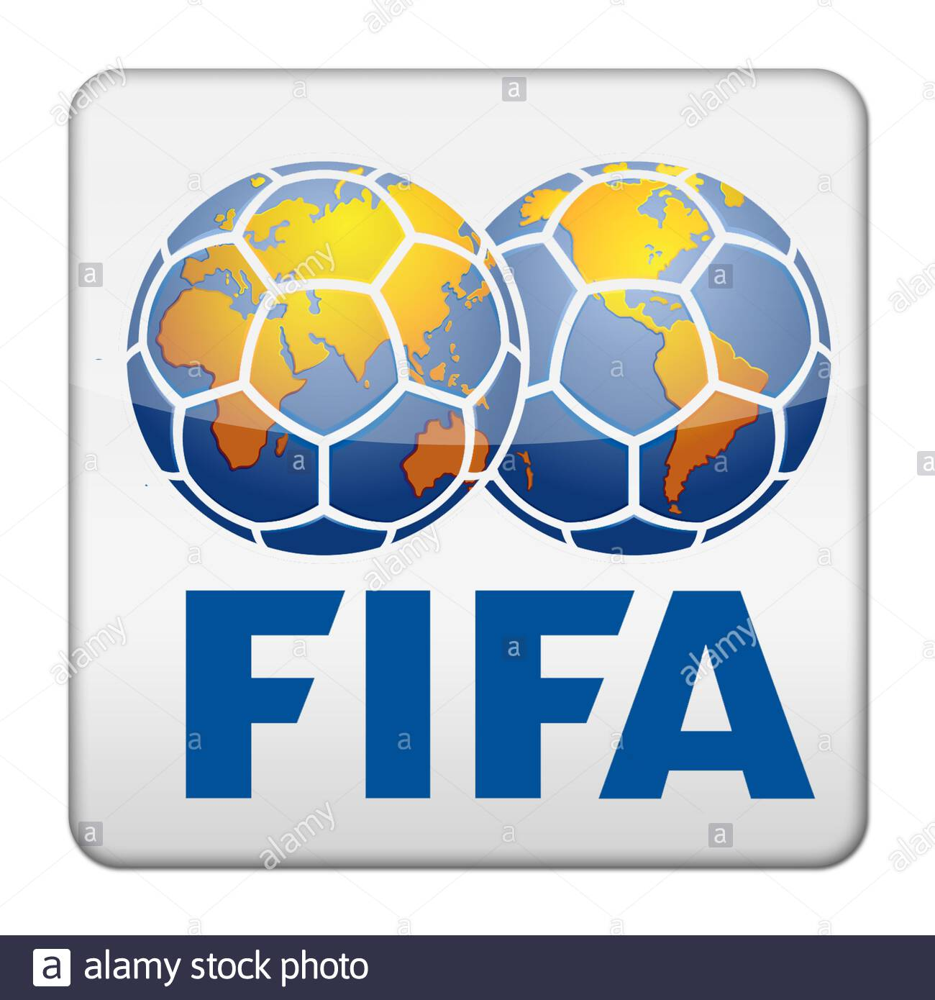

Titre article
La FIFA
La Fédération internationale de football association (souvent désignée par l'acronyme FIFA) est la fédération sportive internationale du football, du futsal et du beach soccer. La FIFA fonctionne selon un cycle de quatre ans et la grande majorité (environ 95%) des revenus de l'organisation proviennent de la vente de droits de télévision, de marketing, d'hospitalité et de licence liés à la Coupe du Monde de la FIFA™. Le 21 mai 1904, à Paris, est créée la Fédération Internationale de Football Association (FIFA), à l'instigation du journaliste et arbitre Robert Guérin.
President de la FIFA
Depuis sa première élection à la présidence de la FIFA, en février 2016, Gianni Infantino consacre son mandat à opérer de vastes réformes au sein de la FIFA, à élargir la participation mondiale aux compétitions phares de la FIFA et à accroître l'investissement de la FIFA dans le développement du footbal.iovanni Vincenzo Infantino dit Gianni Infantino, né le 23 mars 1970 à Brigue en Valais, en Suisse, est un juriste italo-suisse, secrétaire général de l'UEFA de 2009 à 2016 puis président de la FIFA depuis le 26 février 2016 en remplacement de Sepp Blatter.
Logo
